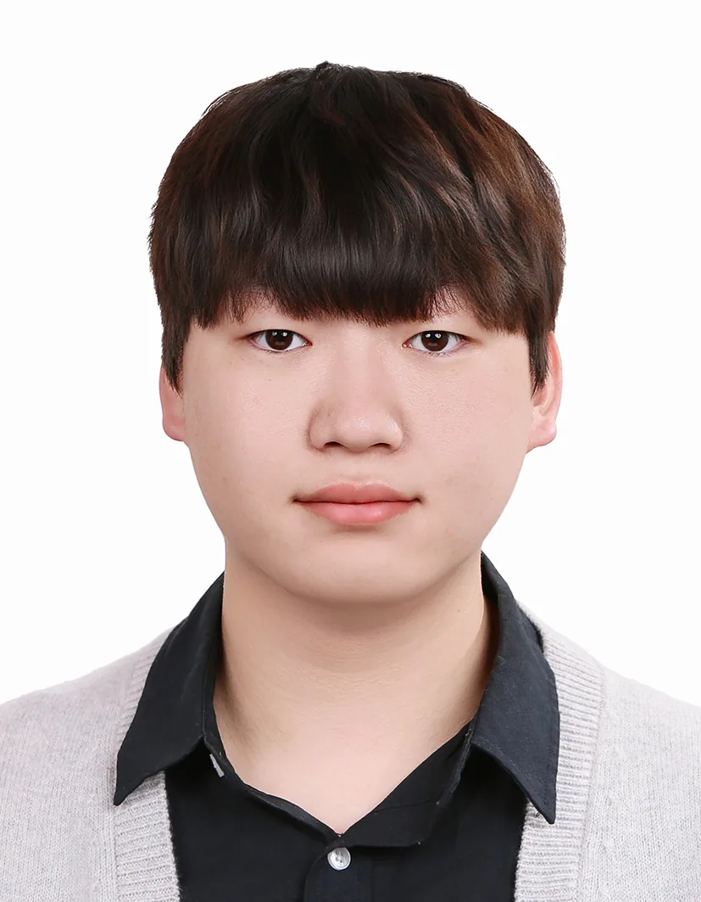
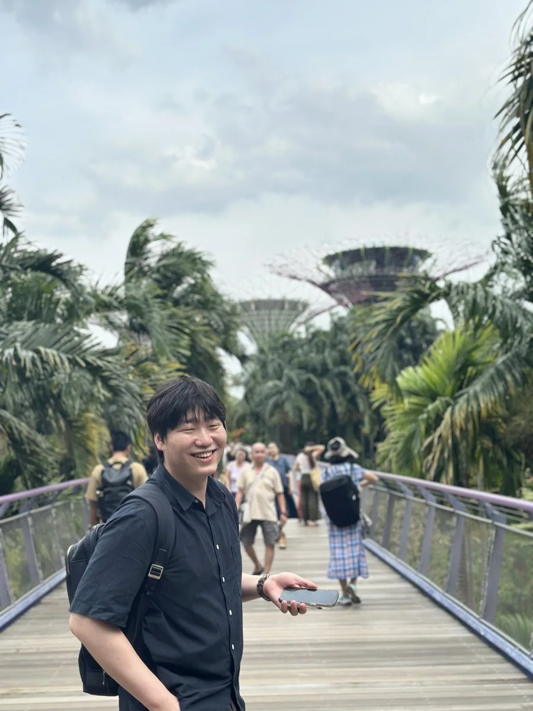
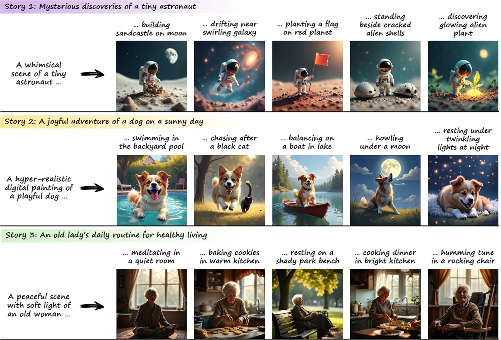
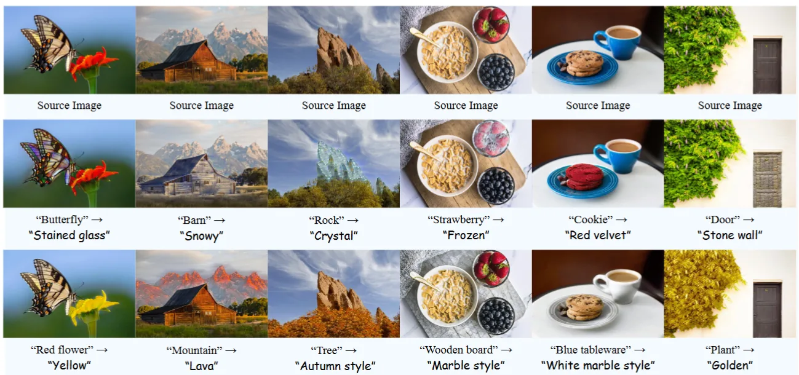
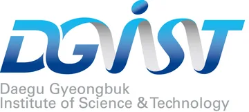

Under reviewUnder review (anonymized)
Long-Term Memory for Consistent Interactive World Models
A lightweight external KV memory that lets frozen interactive world models stay consistent when revisiting scenes over long interactions.
Ph.D. student, DGISTRobotics and Vision Lab
I align representations inside generative models so that what they make stays consistent and controllable, from single images to video world models.
I am an M.S.–Ph.D. integrated student in Interdisciplinary Studies of Artificial Intelligence (ISAI) at DGIST, advised by Prof. Sunghoon Im in the Robotics and Vision Lab. Before that I studied Mechanical Engineering at Zhejiang University, and most recently I was a generative model research intern at Baidu, Inc. in Shenzhen.
My work aligns features and attention across text, images and reference subjects. It covers style transfer and object-centric editing, consistent multi-image generation, and reward-based post-training (ReFL, GRPO) for subject personalization. I am now extending it to video world models, where long-horizon temporal consistency and control are the open problems.
Looking for research internships starting March 2027 or later. If your team works on generative models, I would be glad to hear from you at pjh2857@dgist.ac.kr.


Fig. 0. The author under forward diffusion, xt = √ᾱt x0 + √(1−ᾱt) ε, cosine schedule, T = 1000. Drag t to add noise; press the seed button to draw a new ε and get the other sample.
Research
How do we keep a generative model faithful to a reference, whether that is a style, a character, a subject or a place, while it keeps creating? Each stage below reuses what the last one learned about where that information lives in the network.
Moving a style onto the right object or region, guided by a reference image or by text, without masks.
Sharing identity and style across a batch by aligning features and attention in scale-wise autoregressive models.
Attention-level rewards that teach a diffusion transformer where to look at the reference subject.
Carrying subject identity into video, and keeping interactive world models consistent when the camera returns to a place.
Featured
Teaches the model where to look. State-of-the-art personalization from 10K reference-only images, with no composed targets.
CAD/Graphics 2026 Invited Session

Training-free consistent storytelling at 1.72 s per image, 6× faster than prior consistent text-to-image methods.
32nd HumanTech Encouragement Prize

Object-centric style editing from text alone, guided by a single CLIP model. No masks, and the background stays intact.
30th HumanTech Encouragement Prize
News
Publications
Under reviewUnder review (anonymized)
A lightweight external KV memory that lets frozen interactive world models stay consistent when revisiting scenes over long interactions.
Under reviewUnder review (anonymized)
Video generation that keeps a reference subject’s identity consistent across frames and scenes.
SIGGRAPH Asia 2026ACM SIGGRAPH Asia Conference
Oral PresentationInvited Session, CAD/Graphics 2026Baidu internship
Subject-driven image personalization—generating new images that preserve the identity of one or several reference subjects in novel scenes—is a foundational capability for modern visual content creation. It is currently dominated by generalized methods that fine-tune a pretrained multimodal diffusion transformer (MMDiT) on hundreds of thousands to millions of paired (reference, composed-target) examples, where each composed target is a synthesized image of the subject in a novel scene. Producing such targets demands a costly multi-stage curation pipeline—LLM-based prompt generation, T2I-based composed-target synthesis, reference-subject extraction, VLM-based quality filtering, and correspondence labeling—and tightly couples each method to a particular target synthesizer and curation choice. We introduce CRAFT (Constrained Reward via Attention Fine-Tuning), a single-step ReFL framework that fine-tunes a pre-trained reference-aware MMDiT via LoRA adapters using a compact reference-only data construction—10K reference images and subject masks, with no composed-target supervision. CRAFT realizes a "Where to look" principle: attention-level rewards align noise- and phrase-token attention with the correct reference subject, and the resulting per-subject attention masks gate a pixel-level identity reward to keep image-space supervision consistent with the learned attention routing. Applied to FLUX.2-klein-9B, CRAFT achieves state-of-the-art performance on XVerseBench, surpassing prior generalized methods that use 150K to over 2M composed-target samples—a 15–200× reduction in training data. The same recipe transfers to other reference-aware backbones, consistently improving performance.
SPL 2026IEEE Signal Processing Letters
Radar is an essential sensor for autonomous driving due to its cost-effectiveness and robustness under adverse weather conditions. However, 3D radar points are inherently sparse, noisy, and lack elevation information. As a result, they provide much weaker geometric cues than LiDAR measurements, making reliable representation learning fundamentally challenging. To address this issue, prior works have explored LiDAR-to-radar distillation, enriching radar representations with dense LiDAR geometric priors. However, the substantial modality gap between LiDAR and radar may make such fine-grained alignment unnecessarily restrictive and limit the effectiveness of knowledge transfer. In this letter, we present an object-centric distillation framework that emphasizes semantically meaningful object-level cues rather than dense voxel-level matching. Specifically, we perform object-wise distillation by aggregating teacher and student features within each object region using Gaussian-weighted pooling. We further introduce density-aware curriculum weighting, which adaptively modulates the distillation strength according to the radar point density of each object. Experimental results on the nuScenes dataset show that the proposed method surpasses the existing state of the art by 32.1%, which validates the effectiveness of the proposed framework.
arXiv 2025arXiv preprint
Baidu internship
We present a training-free style-aligned image generation method that leverages a scale-wise autoregressive model. While large-scale text-to-image (T2I) models, particularly diffusion-based methods, have demonstrated impressive generation quality, they often suffer from style misalignment across generated image sets and slow inference speeds, limiting their practical usability. To address these issues, we propose three key components: initial feature replacement to ensure consistent background appearance, pivotal feature interpolation to align object placement, and dynamic style injection, which reinforces style consistency using a schedule function. Unlike previous methods requiring fine-tuning or additional training, our approach maintains fast inference while preserving individual content details. Extensive experiments show that our method achieves generation quality comparable to competing approaches, significantly improves style alignment, and delivers inference speeds over six times faster than the fastest model.
TOMM 2026ACM Transactions on Multimedia Computing, Communications, and Applications
In video-text retrieval, addressing the noisy correspondence problem is crucial for achieving accurate retrieval performance. Recent methods address this challenge by either suppressing the impact of noisy data or predictions distorted by noise. However, existing approaches often overlook two critical aspects: distinguishing hard noise from semantically ambiguous cases, and preserving latent associations within unmatched negative pairs. To address this limitation, we propose a Noise-mined Adaptive Self-Labeling (NASL), which effectively manages noisy data during training. NASL consists of two loss functions: 1) Noise-mined Matching Loss (NML), which identifies and penalizes noisy data based on a two-stage suppression strategy, and 2) Adaptive Self-labeling Loss (ASL), which employs optimal transport to explore extra relationships among false negatives in noisy conditions and provides soft supervision to prevent excessive penalization of semantically plausible pairs. Extensive experiments demonstrate that NASL improves the separation between clean and noisy data while effectively mitigating noise, leading to significant performance improvements on the MSR-VTT, DiDeMo, MSVD, LSMDC and ActivityNet datasets.
SPL 2026IEEE Signal Processing Letters
This letter proposes CascadeOcc, a novel occupancy world model that prioritizes intrinsic structural hierarchy over extrinsic auxiliary modalities for autonomous driving. Occupancy world models—forecasting the future driving environment and planning the driving trajectory—effectively bridge perception and planning, but current approaches often heavily rely on external modalities or large language models, failing to fully exploit the inherent structural potential of occupancy representations themselves. To enhance representational capacity for complex 3D scenes, we integrate a cascaded Vector Quantized (VQ) mechanism into an autoregressive framework. Following a coarse-to-fine principle, CascadeOcc progressively refines fine-grained details from global structures through a multi-scale architecture. Additionally, we incorporate a TimeMixer to capture multi-scale temporal dependencies, establishing a dual-hierarchy mechanism in both space and time. Experimental results on 4D occupancy forecasting and motion planning benchmarks demonstrate that CascadeOcc achieves superior performance among vision-centric approaches, validating that optimizing inherent representations is a powerful alternative to relying on external foundation models.
CVPR 2026IEEE/CVF Conference on Computer Vision and Pattern Recognition
Multi-task learning (MTL) involves the simultaneous optimization of multiple task-specific losses, often leading to gradient conflicts and scale imbalances that result in negative transfer. While existing multi-task optimization methods attempt to mitigate these challenges, they either lack the stochasticity needed to escape poor local minima or fail to explicitly address conflicts at the gradient level. In this work, we propose TaskForce, a novel multi-task optimization framework incorporating cooperative multi-agent reinforcement learning (MARL), where agents learn to find an effective joint optimization strategy based on their respective task gradients and losses. To keep the optimization process compact yet informative, agents observe a summary of the training dynamics that consists of the gradient Gram matrix---capturing both gradient magnitudes and pairwise alignments---and task loss values. Each agent then predicts the balancing parameters that determine the weight of their contribution to the final gradient update. Crucially, we design a hybrid reward function that incorporates both gradient-based signals and loss improvement dynamics, enabling agents to effectively resolve gradient conflicts and avoid poor convergence by considering both direct gradient information and the resulting impact on loss reduction. TaskForce achieves consistent improvements over state-of-the-art MTL baselines on NYU-v2, Cityscapes, and QM9, demonstrating the promise of cooperative MARL in complex multi-task scenarios.
CVPR 2026IEEE/CVF Conference on Computer Vision and Pattern Recognition
We present a training-free framework for style-personalized image generation that operates during inference using a scale-wise autoregressive model. Our method generates a stylized image guided by a single reference style while preserving semantic consistency and mitigating content leakage. Through a detailed step-wise analysis of the generation process, we identify a pivotal step where the dominant singular values of the internal feature encode style-related components. Building upon this insight, we introduce two lightweight control modules: Principal Feature Blending, which enables precise modulation of style through SVD-based feature reconstruction, and Structural Attention Correction, which stabilizes structural consistency by leveraging content-guided attention correction across fine stages. Without any additional training, extensive experiments demonstrate that our method achieves competitive style fidelity and prompt fidelity compared to fine-tuned baselines, while offering faster inference and greater deployment flexibility.
CVPR Findings 2026IEEE/CVF Conference on Computer Vision and Pattern Recognition, Findings
Text-to-Image (T2I) generation models have become central to creative workflows, where producing style-consistent image sets is crucial for applications such as visual identity design, illustration, and asset creation. While recent training-free methods have enabled efficient style-aligned synthesis, they commonly rely on anchor-dependent propagation, where style features from a single reference image are shared across the batch. This dependency often leads to inconsistent results: when the anchor fails to capture the intended reference style, its unintended artifacts are propagated to all samples, and excessive feature sharing further causes content leakage and semantic distortion. To overcome these limitations, we propose FREESTYLE, a training-free and anchor-free framework for robust style alignment within a scale-wise autoregressive generation paradigm. Our method integrates three core components—Majority Voting (MV), which aggregates dominant style cues across the batch to form a representative style feature; Majority Style Injection (MSI), which adaptively injects these aggregated features to enforce global style coherence; and Set-Based Projection (SBP), which refines local object regions by projecting them onto a shared style manifold for context-aware adaptation. Extensive experiments demonstrate that, without any retraining or parameter updates, FREESTYLE achieves state-of-the-art performance in both style consistency and content preservation, while maintaining real-time inference efficiency.
ICEIC 2026The 25th International Conference on Electronics, Information, and Communication
We present Bridging Geometric and Semantic (BriGeS), an effective method that fuses geometric and semantic information within foundation models to enhance Monocular Depth Estimation (MDE). Central to BriGeS is the Bridging Gate, which integrates the complementary strengths of depth and segmentation foundation models. This integration is further refined by our Attention Temperature Scaling technique. It finely adjusts the focus of the attention mechanisms to prevent over-concentration on specific features, thus ensuring balanced performance across diverse inputs. BriGeS capitalizes on pretrained foundation models and adopts a strategy that focuses on training only the Bridging Gate. This method significantly reduces resource demands and training time while maintaining the model's ability to generalize effectively. Extensive experiments across multiple challenging datasets demonstrate that BriGeS outperforms state-of-the-art methods in MDE for complex scenes, effectively handling intricate structures and overlapping objects.
AAAI 2026The 40th Annual AAAI Conference on Artificial Intelligence
Oral PresentationEncouragement Prize, 32nd HumanTech Paper Award
We present Infinite-Story, a training-free framework for consistent text-to-image (T2I) generation tailored for multi-prompt storytelling scenarios. Built upon a scale-wise autoregressive model, our method addresses two key challenges in consistent T2I generation: identity inconsistency and style inconsistency. To overcome these issues, we introduce three complementary techniques: Identity Prompt Replacement, which mitigates context bias in text encoders to align identity attributes across prompts; and a unified attention guidance mechanism comprising Adaptive Style Injection and Synchronized Guidance Adaptation, which jointly enforce global style and identity appearance consistency while preserving prompt fidelity. Unlike prior diffusion-based approaches that require fine-tuning or suffer from slow inference, Infinite-Story operates entirely at test time, delivering high identity and style consistency across diverse prompts. Extensive experiments demonstrate that our method achieves state-of-the-art generation performance, while offering over 6X faster inference (1.72 seconds per image) than the existing fastest consistent T2I models, highlighting its effectiveness and practicality for real-world visual storytelling.
ICCVW 2025IEEE/CVF International Conference on Computer Vision Workshops
We propose SEEDepth, a two-stage framework that effectively fuses information of depth and semantic foundation models to enhance Monocular Depth Estimation (MDE). First, a Fusion Module directly integrates features from depth and segmentation foundation models through attention mechanisms. The fused representations are then distilled into a depth model equipped with Residual Split-wise Transformer (ReSplit), a lightweight semantic injection module. SEEDepth leverages pre-trained foundation models by exclusively training the Fusion Module and ReSplit, keeping computational costs low while preserving pretrained knowledge. Experiments show that SEEDepth outperforms state-of-the-art MDE methods, especially in complex scenes involving fine structures and unclear boundaries.
CVPR 2025IEEE/CVF Conference on Computer Vision and Pattern Recognition
Highlight Paper (Top 3.7%)Encouragement Prize, 30th HumanTech Paper Award
We present Text-driven object-centric style editing model named Style-Editor, a novel method that guides style editing at an object-centric level using textual inputs. The core of Style-Editor is our Patch-wise Co-Directional (PCD) loss, meticulously designed for precise object-centric editing that are closely aligned with the input text. This loss combines a patch directional loss for text-guided style direction and a patch distribution consistency loss for even CLIP embedding distribution across object regions. It ensures a seamless and harmonious style editing across object regions. Key to our method are the Text-Matched Patch Selection (TMPS) and Pre-fixed Region Selection (PRS) modules for identifying object locations via text, eliminating the need for segmentation masks. Lastly, we introduce an Adaptive Background Preservation (ABP) loss to maintain the original style and structural essence of the image's background. This loss is applied to dynamically identified background areas. Extensive experiments underline the effectiveness of our approach in creating visually coherent and textually aligned style editing.
ACCV 202417th Asian Conference on Computer Vision
We introduce Content-Adaptive Style Transfer (CAST), a novel training-free approach for arbitrary style transfer that enhances visual fidelity using vector quantized-based pretrained autoencoder. Our method systematically applies coherent stylization to corresponding content regions. It starts by capturing the global structure of images through vector quantization, then refines local details using our style-injected decoder. CAST consists of three main components: a content-consistent style injection module, which tailors stylization to unique image regions; an adaptive style refinement module, which fine-tunes stylization intensity; and a content refinement module, which ensures content integrity through interpolation and feature distribution maintenance. Experimental results indicate that CAST outperforms existing generative-based and traditional style transfer models in both quantitative and qualitative measures.
Background
Baidu, Inc., Shenzhen. Mentor: Dr. Yan Zhang. Diffusion and flow-matching models, GRPO / ReFL post-training. Led to CRAFT.

DGIST, Daegu. Robotics and Vision Lab, Prof. Sunghoon Im.
Zhejiang University, Hangzhou.
Chungnam Samsung Academy.
Korean (native) · Chinese (fluent) · English (fluent) | PyTorch, Diffusers, Python
Activities